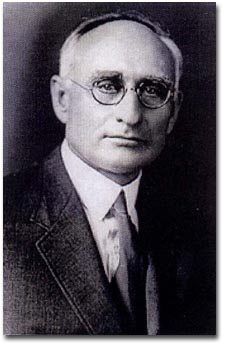
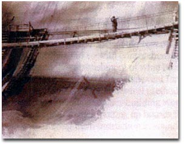
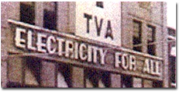

|
ARTHUR
E. MORGAN: HUMAN ENGINEER AND COLLEGE PRESIDENT
1878-1975
By
Donald Szantho Harrington, Minister Emeritus
of the Community Church of New York
.
|  |
| Arthur
Morgan, President of Antioch College. |
I first met Arthur Morgan when
I was sixteen years old. He was speaking in Boston about
Antioch College and his dream of a new and better kind of
education. We being Unitarians, my mother took me in to
hear him. I remember a tall, spare figure, raw-boned like
Lincoln, with deep set, kindly eyes and intense seriousness.
His voice was pleasant, his logic lucid and overwhelmingly
persuasive, his points illuminated by homely illustrations
from his own experience, which made his theories come alive.
As we left the meeting, I felt as if I had seen a vision
and was suffused with its light. I said to my mother, "I
must go to Antioch!"
I applied
the next day, and in due course there came an application
form and a test to be taken. It was quite an unorthodox
test. The College, it seemed, wanted to know not just what
my I.Q. might be and how much I already knew, but it sought
to plumb my attitudes, motivations, sense of purpose and
social feeling. I must have passed, for the Fall of 1931
found me in the entering Freshman class at Yellow Springs.
I found
Arthur Morgan very much at the heart of things at Antioch.
His home was the center of innovative ideas and the source
of a running dialogue of constructive self-criticism. Though
busy with fund raising and a thousand administrative responsibilities,
Morgan had time for any student who had come alive with
one of his ideas and wanted to worry it a bit. He spoke
often at College assembly, and his brief, terse published
communications called "Antioch Notes" were thought provoking
and life provoking.
When he
was on campus he frequently went walking early on Sunday
mornings in beautiful, thousand acre Glen Helen at the campus'
edge. He let it be known that students would be welcome
to walk with him. He carried the makings of breakfast in
a knapsack on his back, and somewhere along the way would
stop, build a fire and cook breakfast to undergird the discussion.
It meant getting up early, around five thirty a.m., but
I walked often with him. Sometimes there were just the two
of us.
On these
walks he noticed the growing things and their interaction
with each other. He could tell you about the geological
past of the area and point to where you would find abundant
fossils of creatures that had lived there when the area
was still under water. His ability to see the parallels
was beautifully expressed in something he wrote later on
about there being a place for small and big business within
the total picture of America's economic life. Here is how
he put it:
"My picture
of American business is not of a choice between big business
and little business, but of normal distribution, just
as there is normal distribution between large and small
in a primeval hardwood forest. Let that which is most
effective if big remain big, that which is most effective
if middle-sized remain middle-sized, and that which is
most effective if small remain small; each respecting
the functions of the other."
In 1932,
Dr. Morgan took a year's sabbatical, in the course of which
he went to visit the Unitarians in Transylvania. He had
been a Lay Leader of the Unitarian Church in the United
States, and one of his Antioch students had married an idealistic,
young Transylvanian Unitarian Minister, Francis Balazs.
Balazs had returned from America and his studies here by
way of Asia and, having visited Gandhi and Schweitzer, had
finally gone to minister in a tiny vIllage in Transylvania
called Meszko, where he tried to implement some of Arthur
Morgan's ideas for community development. He had organized
a cooperative movement and had revolutionized in many respects
not only his own village but the entire valley. In a ministry
of only five years, he wrote several books about the improvement
of village life.
When Morgan
arrived in Meszko in 1932, Francis Balazs lay mortally ill
with tuberculosis, and his church work was being cared for
by a theological student sent out from the seminary in Kolozsvar.
The student's name was Vilma Szantho. She was the first
woman ever to be admitted to theological school in that
part of the world. Francis Balazs had been the first minister
to invite a woman to preach in his church, and she was that
woman. That is how Arthur E. Morgan knew both Vilma and
me some six years before we ever met each other. The deepening
friendship grew across the years into our marriage.
Arthur
Morgan was born near Cincinnati, Ohio , but his family soon
moved to St. Cloud, Minnesota, where he grew up. His father
was an engineer, and his own interests leaned in that direction.
Very early in his life he seems to have had a concern for
social improvement for when he was just ten years old he
was publishing great quotations for human uplift on a regular
basis in one of the St. Cloud newspapers. In 1895, at the
age of seventeen, he experienced a vivid vision of an ideal
community while walking home through the woods. The Utopian
dream of an ideal society was thereafter to direct his steps
for the rest of his life.
|  |
|
The
idealistic Morgan's most evident achievement was
literally cast in concrete: the TVA dams.
|
After graduating from high
school he left home, at the age of nineteen and spent the
next three years doing many kinds of outdoor work, mostly
in Colorado, finding that there was a real dearth of understanding
of hydraulic engineering.Then he returned home, reading
and studying problems relating to hydraulics, and began
to practice engineering with his father, learning his profession
in the old-fashioned way, from the ground up, by apprenticeship.
Perhaps this is how he became committed to the alternating
work-study method of education which he later introduced
at Antioch. He married and had three children, Ernest, Griscom
and Frances, each of whom would later have a distinguished
career centered on some aspect of human service.
At the age of thirty two,
he founded his own engineering company, and three years
later, after a disastrous flood had practically wiped out
the city of Dayton, Ohio, he was called to take full charge
of the Miami River Flood Control Project, involving the
building of several huge dams. This work he did so well
as to be set on the road to worldwide engineering fame.
In 1919 Arthur Morgan
was appointed to the Board of Antioch College, a dying institution
in Yellow Springs, Ohio, a moribund village some eighteen
miles from Dayton. He saw Antioch and Yellow Springs as
a kind of double opportunitv to test out his higher educational
ideas and his concepts for community development. He was
made President, and there began a thrilling experiment in
innovative higher education. When I arrived at Antioch in
1931, I found the strong emphasis was upon becoming a well
rounded, whole man or woman dedicated to the welfare of
humanity. To accomplish this there was a broad range of
required courses, though attendance at them was not compulsory
in accord with his emphasis upon self-discipline, but an
art major, for example, was required to know something about
the sciences; the science major to take courses in the humanities
and to try his or her hand at the arts. Everyone was required
to take courses in personal finance and budgeting, personal
health and physical education. Spectator sports in the form
of varsity athletics had been abolished by vote of the student
body in favor of intramural sports in which everyone took
part, and every dormitory hall developed its own personality
and sports teams in place of fraternities or sororities.
The college slogan inherited from Horace Mann, the first
President, was, Be ashamed to die until you have won
some victory for humanity!"
In fifteen
years Arthur Morgan built up Antioch College to where it
was ranked among the top three colleges of the nation in
a study by the Carnegie Corporation. Perhaps the most notable
of his innovations was the work-study method in which students
would study for ten weeks, and then go off campus to work
on a job out in the real world. He believed that such an
alternation would keep curriculum alive and help the student
to apply and assimilate what he was learning in the classroom.
In 1933, Arthur Morgan was
called by President Franklin D. Roosevelt to initiate and
head the vast development project known as the Tennessee
Valley Authority, at that time the greatest effort at regional
development of natural resources and human beings ever attempted
in the history of the world.
Morgan told
the story of how Roosevelt had told him that he had a free
hand, but not twenty steps from Roosevelt's office, he was
met by Jim Farley with a long list of people to be employed.
Arthur Morgan, with typical forthrightness, turned sharply
about, took Farley by the arm and took him right back into
the President's office, showed the President the list, and
asked if he was or was not to have a free hand. Laughing
the President took the list, and reassured him that he and
no one else would make the decisions.
It
is ironic that while Arthur Morgan was able to resist political
corruption and corporate venality and to contend successfully
with mighty natural forces, he was unable to cope with the
intrigues, the contempt for his social ideals and policies,
and the "dirty tricks," like the doctoring of minutes and
misrepresentation of his views, on the part of one of his
co-chairmen, David Lilienthal, and after six years he was
removed from his post. Nonetheless, the basic character
of TVA had been established and though his so-called visionary
projects were discontinued under his successor, many of
them were revived under later administrations.
When Arthur Morgan came home
to Yellow Springs after the TVA dismissal at the age of
sixty, a crowd of a thousand persons had gathered at the
station to say "welcome home! we love you!
It was during this same
period of intense preoccupation with the TVA and its victories
and disappointments that he finished a lifelong work on
a biography of the great Utopian of the nineteenth century,
Edward Bellamy, and discovered connections between Utopian
writings and actual ideal societies. This led to his landmark
volume entitled, Nowhere Was Somewhere.
Upon his return to Yellow
Springs in 1939, Arthur Morgan turned his thought and energy
to the problem of revitalizing America's small communities,
the "Seedbed of Society" and the garden in which human character
is grown. It was a return to an old love, for he had already
built model villages in Ohio and Tennessee and sparked a
successful "intentional" community in North Carolina. He
had been the moving force transforming the village of Yellow
Springs from a moribund littIe hamlet to an exciting and
vibrant ideal community in which people wanted to live.
He succeeded beyond his own modest hopes, and Yellow Springs
today is a monument to his vision and idealism.
Abridged
from an address delivered at the Community Church of New
York (Unitarian Universalist) in 1975.
|
WANTED
— COMMUNITY PIONEERS
As
the small community is, so will America be. Yet
we have neglected our small communities, exploited
them and robbed them. When they have deteriorated
to a certain point, they become so unattractive
to intelligent, ambitious persons that the exodus
of quality is accelerated. If our enemies had
devised a program for bringing the greatness of
America to an end, could they have been more effective?
Yet
there is no inherent need for this deterioration
of the small community. If men and women of character
and purpose come to see the significance of the
present situation, they can make our small communities
such live, interesting, adequate places to live
in that young people of quality will prefer to
stay there.
Arthur
E. Morgan, Member of the Unitarian Church of Dayton,
Ohio
From The Christian Register, May, 1945.
|
Nowhere
Was Somewhere: How History Makes Utopias and Utopias Make
History Arthur E. Morgan (Durham: University of North
Carolina Press, 1946).
The Making of
the TVA Arthur E. Morgan (Amherst NY: Prometheus Books,
1974).
UNITARIAN
NOTE
"Why I Believe in Advancing Unitarianism"
by Arthur E. Morgan
This,
then, is the call of the liberal: to free himself from
credulous loyalties and commitments; to develop objectivity;
to cultivate an appetite for inquiry; and to develop
gradually a discriminating appraisal based on full recognition
of realities. This attitude will develop humility, for
the difficulty of the process will be realized.
Any person who comes to realize the need of the world
for the free spirit cannot tolerate in himself diletantism
or trifling living or self-centeredness. The need of
the world for the free spirit will impress him so deeply
that all he is and he has will be committed to its advancement.
As men come to realize this need they will not be "tired
liberals" or men who sit softly in economic and
social comfort. They will be campaigners and pioneers
with all the strength and life they have, campaigners
to break men's bonds, not to exchange them for new ones.
Freedom
to inquire, including undisouraged appetite for inquiry,
is the mother of all freedoms.
From The Christian Register, May
1946
|